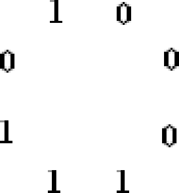
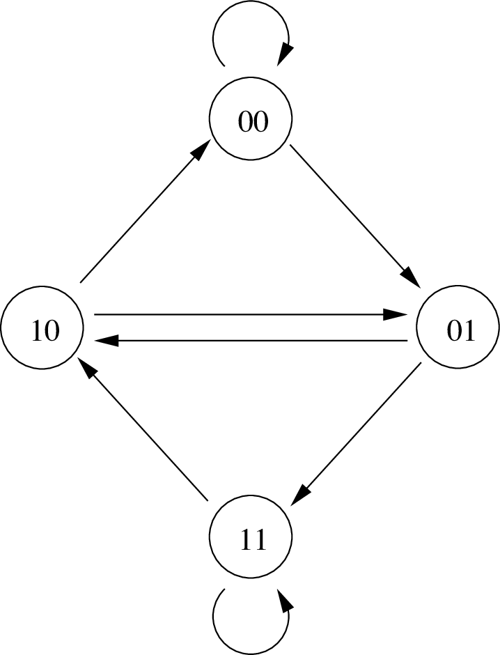

Graph Theory
Graph Theory: An Introduction
One of the fundamental ideas in computer science is the notion of abstraction: capturing the essence or the core of some complex situation by a simple model. Some of the largest and most complex entities we might deal with include the internet, the brain, maps, and social networks. In each case, there is an underlying “network” or graph that captures the important features that help us understand these entities more deeply. In the case of the internet, this network or graph specifies how web pages link to one another. In the case of the brain, it is the interconnection network between neurons. We can describe these ideas in the beautiful framework of graph theory, which is the subject of this lecture.
Remarkably, graph theory has its origins in a simple evening pastime of the residents of Königsberg, Prussia (nowadays Kaliningrad, Russia) a few centuries ago. Through their city ran the Pregel river, depicted on the left in Figure 1 below, separating Königsberg into two banks \(A\) and \(D\) and islands \(B\) and \(C\). Connecting the islands to the mainland were seven bridges. As the residents of the city took their evening walks, many would try to solve the challenge of picking a route that would cross each of the seven bridges precisely once and return to the starting point.
Figure 1: (Left) The city of Königsberg. (Right) The (multi-)graph modeling the bridge connections in Königsberg.
In 1736, the brilliant mathematician Leonhard Euler proved this task to be impossible. How did he do it? The key is to realize that for the purpose of choosing such a route, Figure 1 (Left) can be replaced with Figure 1 (Right), where each land mass \(A\), \(B\), \(C\), and \(D\) is replaced by a small circle, and each bridge by a line segment. With this abstraction in place, the task of choosing a route can be restated as follows: trace through all the line segments and return to the starting point without lifting the pen, and without traversing any line segment more than once. The proof of impossibility is simple. Under these tracing rules, the pen must enter each small circle as many times as it exits it, and therefore the number of line segments incident to that circle must be even. But in Figure 1 (Right), each circle has an odd number of line segments incident to it, so it is impossible to carry out such a tracing. Actually Euler did more. He gave a precise condition under which the tracing can be carried out. For this reason, Euler is generally hailed as the inventor of graph theory.
Formal Definitions
Formally, a (undirected) graph is defined by a set of vertices \(V\) and a set of edges \(E\). The vertices correspond to the little circles in Figure 1 above, and the edges correspond to the line segments between the vertices. In Figure 1, \(V = \{A, B, C, D\}\) and \(E= \{\{A,B\}, \{A,B\}, \{A,C\}, \{B,C\}, \{B,D\}, \{B,D\}, \{C,D\} \}\). However, note that here \(E\) is a multiset (a set where an element can appear multiple times). This is because in the Königsberg example there are multiple bridges between a pair of banks. We will generally not consider such a situation of multiple edges between a single pair of vertices, so in our definition, we require \(E\) to be a set, not a multi-set. What this means is that between any pair of vertices there is either \(0\) or \(1\) edge. If there are multiple edges between a pair of vertices, then we collapse them into a single edge.
More generally, we can also define a directed graph. If an edge in an undirected graph represents a street, then an edge in a directed graph represents a one-way street. To make this formal, let \(V\) be a set denoting the vertices of a graph \(G\). For example, we can have \(V={\{1,2,3,4\}}\). Then, the set of (directed) edges \(E\) is a subset of \(V\times V\), i.e. \(E\subseteq V\times V\). (Recall here that \(U\times V\) denotes the Cartesian product of sets \(U\) and \(V\), defined as \(U \times V = \{(u,v): u \in U \text{ and } v \in V\}\).) Continuing with our example, let \(E={\{(1,2),(1,3),(1,4)\}}\). Then, the corresponding graph is given by \(G_1\) below.
Examples of directed and undirected graphs, respectively.
Note that each edge in \(G_1\) has a direction specified by an arrow; thus, for example, \((1,2)\in E\) but \((2,1)\not\in E\). Such graphs are useful in modeling one-way relationships, such as one-way streets between two locations, and are called directed. On the other hand, if each edge goes in both directions, i.e., \((u,v)\in E\) iff \((v,u)\in E\), then we call the graph undirected. For undirected graphs we drop the ordered pair notation for edges, and simply denote the edge between \(u\) and \(v\) by the set \(\{u,v\}\). Undirected graphs model relationships such as two-way streets between locations naturally, and an example is given by \(G_2\) above. For simplicity, we omit the arrowheads when drawing edges in undirected graphs. We conclude that a graph is thus formally specified as an ordered pair \(G=(V,E)\), where \(V\) is the vertex set and \(E\) is the edge set.
Sanity check! What are the vertex and edge sets \(V\) and \(E\) for graph \(G_2\)?
Let us continue our discussion with a working example from social networks, an area in which graph theory plays a fundamental role. Suppose you wish to model a social network in which vertices correspond to people, and edges correspond to the following relationship between people: We say Alex recognizes Bridget if Alex knows who Bridget is, but Bridget does not know who Alex is. If, on the other hand, Alex knows Bridget and Bridget knows Alex, then we say they know each other.
Sanity check! Suppose first that an edge between two people (say) Alex and Bridget means that Alex recognizes Bridget; would you use a directed or undirected graph for this? How about if an edge instead means Alex and Bridget know each other? (Answer: directed and undirected, respectively.)
Moving on with our example, we say that edge \(e = \{u,v\}\) (or \(e=(u,v)\)) is incident on vertices \(u\) and \(v\), and that \(u\) and \(v\) are neighbors or adjacent. If \(G\) is undirected, then the degree of vertex \(u \in V\) is the number of edges incident to \(u\), i.e., \(degree(u)=|\{v \in V: \{u,v\} \in E\}|\). A vertex \(u\) whose degree is \(0\) is called an isolated vertex, since there is no edge which connects \(u\) to the rest of the graph.
Sanity check! What does the degree of a vertex represent in our undirected social network in which an edge \(\{u, v\}\) means \(u\) and \(v\) know each other? How should we interpret an isolated vertex?
A directed graph, on the other hand, has two different notions of degree due to the directions on the edges. Specifically, the in-degree of a vertex \(u\) is the number of edges from other vertices to \(u\), and the out-degree of \(u\) is the number of edges from \(u\) to other vertices.
Sanity check! What do the in-degree and out-degree of a vertex represent in our directed social network in which an edge \((u, v)\) means \(u\) recognizes \(v\)?
Finally, our definition of a graph thus far allows edges of the form \(\{u,u\}\) (or \((u,u)\)), i.e., a self-loop. In our social network, however, this gives us no interesting information (it means that person \(A\) recognizes him/herself!). Thus, here and in general in these notes, we shall assume that our graphs have no self-loops, unless stated otherwise. We shall also not allow multiple edges between a pair of vertices (unlike the case of the Seven Bridges of Königsberg).
Paths, Walks, and Cycles
Let \(G=(V,E)\) be an undirected graph. A path in \(G\) is a sequence of edges \[\{v_1,v_2\},\{v_2,v_3\},...,\{v_{n-2},v_{n-1}\},\{v_{n-1},v_n\}.\] In this case we say that there is a path between \(v_1\) and \(v_n\). For example, suppose the graph \(G_3\) below models a residential neighborhood in which each vertex corresponds to a house, and two houses \(u\) and \(v\) are neighbors if there exists a direct road from \(u\) to \(v\).
Sanity check! What is the shortest path from house \(1\) to house \(3\) in \(G_3\)? How about the longest path, assuming no house is visited twice?
Usually, we assume a path is simple, meaning \(v_1,\ldots,v_n\) are distinct. This makes complete sense in our housing example \(G_3\); if you wanted drive from house \(1\) to \(3\) via house \(2\), why would you visit house \(2\) more than once? A cycle (or circuit) is a sequence of edges \(\{v_1,v_2\},\{v_2,v_3\},\ldots,\{v_{n-2},v_{n-1}\},\{v_{n-1},v_n\},\{v_n,v_1\}\), where \(v_1,\ldots,v_n\) are distinct (i.e., a cycle is a path which starts and ends on the same vertex \(v_1\)).
Sanity check! Give a cycle starting at house \(1\) in \(G_3\).
Suppose now that your aim is not to go from \(1\) to \(3\) as quickly as possible, but to take a leisurely stroll from \(1\) to \(3\) via the sequence \(\{1,2\},\{2,1\},\{1,4\},\{4,3\}\). A sequence of edges with repeated vertices, such as this one, is called a walk from \(1\) to \(3\). Analogous to the relationship between paths and cycles, a tour is a walk which starts and ends at the same vertex. For example, \(\{1,2\},\{2,3\}, \{3,1\}\) is a tour.
Connectivity
Much of what we discuss in this note revolves around the notion of connectivity. A graph is said to be connected if there is a path between any two distinct vertices. For example, our residential network \(G_3\) above is connected, since one can drive from any house to any other house via some sequence of direct roads. On the other hand, the network below is disconnected.
Sanity check! What would a disconnected vertex represent in our residential network? Why would you not want to design a neighborhood this way?
Note that any graph (even a disconnected one) always consists of a collection of connected components, i.e., sets \(V_1,\dots,V_k\) of vertices, such that all vertices in a set \(V_i\) are connected. For example, the graph above is not connected, but nevertheless consists of three connected components: \(V_1={\{1,2,3\}}\), \(V_2={\{4\}}\), and \(V_3={\{5,6,7\}}\).
Revisiting the Seven Bridges of Königsberg: Eulerian Tours
With a formal underpinning in graph theory under our belts, we are ready to revisit the Seven Bridges of Königsberg. What exactly is this problem asking? It says: Given a graph \(G\) (in this case, \(G\) is an abstraction of Königsberg), is there a walk in \(G\) that uses each edge exactly once? We call any such walk in a graph an Eulerian walk. (In contrast, by definition a walk can normally visit each edge or vertex as many times as desired.) Moreover, if an Eulerian walk is closed, i.e., it ends at its starting point, then it is called an Eulerian tour. Thus, the Seven Bridges of Königsberg asks: Given a graph \(G\), does it have an Eulerian tour? We now give a precise characterization of this in terms of simpler properties of the graph \(G\). For this, define an even degree graph as a graph in which all vertices have even degree.
Theorem 1 (Euler's Theorem (1736))
An undirected graph \(G=(V,E)\) has an Eulerian tour iff \(G\) is even degree, and connected (except possibly for isolated vertices).
Proof. To prove this, we must establish two directions: if, and only if.
Only if. We give a direct proof for the forward direction, i.e., if \(G\) has an Eulerian tour, then it is connected and has even degree. Assume that \(G\) has an Eulerian tour. This means every vertex that has an edge adjacent to it (i.e., every non-isolated vertex) must lie on the tour, and is therefore connected with all other vertices on the tour. This proves that the graph is connected (except for isolated vertices).
Next, we prove that each vertex has even degree by showing that all edges incident to a vertex can be paired up. Notice that every time the tour enters a vertex along an edge it exits along a different edge. We can pair these two edges up (they are never again traversed in the tour). The only exception is the start vertex, where the first edge leaving it cannot be paired in this way. But notice that by definition, the tour necessarily ends at the start vertex. Therefore, we can pair the first edge with the last edge entering the start vertex. So all edges adjacent to any vertex of the tour can be paired up, and therefore each vertex has even degree.
If. We give a recursive algorithm for finding an Eulerian tour, and prove by induction that it correctly outputs an Eulerian tour.
We start with a useful subroutine, FindTour(G, s), which finds a tour (not necessarily Eulerian) in \(G\). FindTour is very simple: it just starts walking from a vertex \(s \in V\), at each step choosing any untraversed edge incident to the current vertex, until it gets stuck because there is no more adjacent untraversed edge. We now prove that FindTour must in fact get stuck at the original vertex \(s\).
Claim: FindTour(G, s) must get stuck at \(s\).
Proof of Claim: An easy proof by induction on the length of the walk shows that when FindTour enters any vertex \(v \neq s\), it will have traversed an odd number of edges incident to \(v\), while when it enters \(s\) it will have traversed an even number of edges incident to \(s\). Since every vertex in \(G\) has even degree, this means every time it enters \(v \neq s\), there is at least one untraversed edge incident to \(v\), and therefore the walk cannot get stuck. So the only vertex it can get stuck at is \(s\). The formal proof is left as an exercise. \(\square\)
The algorithm FindTour(G, s) returns the tour it has traveled when it gets stuck at \(s\). Note that while FindTour(G, s) always succeeds in finding a tour, it does not always return an Eulerian tour.
We now give a recursive algorithm Euler(G, s) that outputs an Eulerian tour starting and ending at \(s\). Euler(G, s) invokes another subroutine Splice(T, T_1, ..., T_k) which takes as input a number of edge disjoint tours \(T, T_1,\dots,T_k\) (\(k \ge 1\)), with the condition that the tour \(T\) intersects each of the tours \(T_1, \ldots, T_k\) (i.e., \(T\) shares a vertex with each of the \(T_i\)’s). The procedure Splice(T, T_1, ..., T_k) outputs a single tour \(T'\) that traverses all the edges in \(T, T_1,\dots,T_k\), i.e., it splices together all the tours. The combined tour \(T'\) is obtained by traversing the edges of \(T\), and whenever it reaches a vertex \(s_i\) that intersects another tour \(T_i\), it takes a detour to traverse \(T_i\) from \(s_i\) back to \(s_i\) again, and only then it continues traversing \(T\).
The algorithm Euler(G, s) is given as follows:
function Euler(G, s)
T = FindTour(G, s)
Let G_1, ..., G_k be the connected components when the edges in T are removed from G,
and let s_i be the first vertex in T that intersects G_i
Output Splice(T, Euler(G_1, s_1), ..., Euler(G_k, s_k))
end EulerWe prove by induction on the size of \(G\) that Euler(G, s) outputs an Eulerian Tour in \(G\). The same proof works regardless of whether we think of size as number of vertices or number of edges. For concreteness, here we use number of edges \(m\) of \(G\).
Base Case: \(m = 0\), which means \(G\) is empty (it has no edges), so there is no tour to find.
Induction Hypothesis: Euler(G, s) outputs an Eulerian Tour in \(G\) for any even degree, connected graph with at most \(m \ge 0\) edges.
Induction Step: Suppose \(G\) has \(m+1\) edges. Recall that \(T\), the output of FindTour(G, s), is a tour, and therefore has even degree at every vertex. When we remove the edges of \(T\) from \(G\), we are therefore left with an even degree graph with less than \(m\) edges, but it might be disconnected. Let \(G_1, \ldots, G_k\) be the connected components. Each such connected component has even degree and is connected (up to isolated vertices). Moreover, \(T\) intersects each of the \(G_i\), and as we traverse \(T\) there is a first vertex where it intersects \(G_i\). Call it \(s_i\). By the induction hypothesis Euler(G_i, s) outputs an Eulerian tour of \(G_i\). Now by the definition of Splice, it splices the individual tours together into one large tour whose union is all the edges of \(G\), hence an Eulerian tour. \(\square\)
Sanity check! Why does Theorem 1 imply the answer to the Seven Bridges of Königsberg is no?
Planarity, Euler’s Formula, Coloring
Trees
We need to discuss trees briefly here, though we will discuss them more later. A graph is a tree if it is connected and acyclic (contains no cycles). There are many other equivalent definitions. For example, a tree is a connected graph where the number of vertices is one more than the number of edges. Or, a tree is a connected graph such that if you delete any edge it becomes disconnected.
Planar Graphs
A graph is planar if it can be drawn on the plane without crossings. For example, the first four graphs shown below are planar. Notice that the first and second graphs are the same, but drawn differently. Even though the second drawing has crossings, the graph is still considered planar since it is possible to draw it without crossings.
The other three graphs are not planar. The first one of them is the infamous “three houses-three wells graph,” also called \(K_{3,3}\). The second is the complete graph with five nodes, or \(K_5\). The third is the four-dimensional cube. We shall soon see how to prove that all three graphs are non-planar.
When a planar graph is drawn on the plane, one can distinguish, besides its vertices (their number will be denoted \(v\) here) and edges (their number is \(e\)), the faces of the graph (more precisely, of the drawing). The faces are the regions into which the graph subdivides the plane. One of them is infinite, and the others are finite. The number of faces is denoted \(f\). For example, for the first graph shown \(f=4\), and for the fourth (the cube) \(f=6\).
One basic and important fact about planar graphs is Euler’s formula, \(v+f=e+2\) (check it for the graphs above). It has an interesting story. The ancient Greeks knew that this formula held for all polyhedra (check it for the cube, the tetrahedron, and the octahedron, for example), but could not prove it. How do you do induction on polyhedra? How do you apply the induction hypothesis? What is a polyhedron minus a vertex, or an edge? In the 18th century Euler realized that this is an instance of the inability to prove a theorem by induction because it is too weak, something that we saw time and again when we were studying induction. To prove the theorem, one has to generalize polyhedra. And the right generalization is planar graphs.
Can you see why planar graphs generalize polyhedra? Why are all polyhedra (without “holes”) planar graphs?
Theorem 2 (Euler’s Formula)
For every connected planar graph, \(v+f=e+2\).
Proof. By induction on \(e\). It certainly holds when \(e=0\), and \(v=f=1\). Now take any connected planar graph. Two cases:
If it is a tree, then \(f=1\) (drawing a tree on the plane does not subdivide the plane), and \(e=v-1\) (check homework).
If it is not a tree, find a cycle and delete any edge of the cycle. This amounts to reducing both \(e\) and \(f\) by one. By induction the formula is true in the smaller graph, and so it must be true in the original one. \(\square\)
What happens when the graph is not connected? How does the number of connected components enter the formula?
Take a planar graph with \(f\) faces, and consider one face. It has a number of sides, that is, edges that bound it clockwise. Note that an edge may be counted twice, if it has the same face on both sides, as it happens for example in a tree (such edges are called bridges). Denote by \(s_i\) the number of sides of face \(i\). Now, if we add the \(s_i\)’s we are going to get \(2e\), because each edge is counted twice, once for the face on its right and once for the face on its left (they may coincide if the edge is a bridge). We conclude that, in any planar graph, \[\sum_{i=1}^f s_i =2e.\](1) Now notice that, since we don’t allow parallel edges between the same two nodes, and if we assume that there are at least two edges (so there are at least three vertices), every face has at least three sides, or \(s_i\geq 3\) for all \(i\). It follows that \(3f\leq 2e\). Solving for \(f\) and plugging into Euler’s formula we get \[e\leq 3v -6.\]
This is an important fact. First it tells us that planar graphs are sparse, they cannot have too many edges. A \(1000\)-vertex connected graph can have anywhere between a thousand and half a million edges. This inequality tells us that for planar graphs the range is very small, between \(999\) and \(2994\).
It also tells us that \(K_5\) is not planar: Just notice that it has five vertices and ten edges.
\(K_{3,3}\) has \(v=6,e=9\) so it passes the planarity test with flying colors. We must think a little harder to show that \(K_{3,3}\) is non-planar. Notice that, if we had drawn it on the plane, there would be no triangles. Because a triangle means that two wells or two houses are connected together, which is false. So, Equation 1 now gives us \(4f\leq 2e\), and solving for \(f\) and plugging into Euler’s formula, \(e\leq 2v-4\), which shows that \(K_{3,3}\) is non-planar.
So, we have established that \(K_5\) and \(K_{3,3}\) are both non-planar. There is something deeper going on: In some sense, these are the only non-planar graphs. This is made precise in the following famous result, due to the Polish mathematician Kuratowski (this is what “\(K\)” stands for).
Theorem 3
A graph is non-planar if and only if it contains \(K_5\) or \(K_{3,3}\).
“Contains” here means that one can identify nodes in the graph (five in the case of \(K_5\), six in the case of \(K_{3,3}\)) which are connected as the corresponding graph through paths (possibly single edges), and such that no two of these paths share no vertex. For example, the 4-cube shown below is non-planar, because it contains \(K_{3,3}\), as shown.
Can you find \(K_5\) in the same graph?
One direction of Kuratowski’s theorem is obvious: If a graph contains one of these two non-planar graphs, then of course it is itself non-planar. The other direction, namely that in the absence of these graphs we can draw any graph on the plane, is difficult. For a short proof you may want to type “proof of Kuratowski’s theorem” in your favorite search engine.
Duality and Coloring
There is an interesting duality between planar graphs. For example, the Greeks knew that the octahedron and the cube are “dual” to each other, in the sense that the faces of one can be put in correspondence with the vertices of the other (think about it). The tetrahedron is self-dual. And the dodecahedron and the icosahedron (look for images in the web if you don’t know these pretty things) are also dual to one another.
What does this mean? Take a planar graph \(G\), and assume it has no bridges and no degree-two nodes. Draw a new graph \(G^*\): Start by placing a node on each face of \(G\). Then draw an edge between two faces if they touch at an edge — draw the new edge so that it crosses that edge. The result is \(G^*\), also a planar graph. Notice now that, if you construct the dual of \(G^*\), it is the original graph: \((G^*)^*=G\).
Duality is a convenient consideration when thinking about planar graphs. Also, it tells us that “coloring a political map so that no two countries who share a border have the same color” is the same problem as “coloring the vertices of a planar graph (the dual of the political map) so that no two adjacent vertices have the same color”.
A famous theorem states that four colors are always enough! (Search for “four color theorem”.)
We shall prove something weaker:
Theorem 4
Every planar graph can be colored with five colors.
Before proceeding with the proof, we consider alternative legal colorings of a graph. We first take the subset of vertices of two colors, say \(1\) and \(2\), and compute the connected components. We note that we can switch the two colors in a single connected component; consider any edge that is not in the connected component is clearly fine, any edge in the connected component has both endpoints switched which is also fine.
Proof. Induction on \(v\). The base case is not worth talking about, so we go directly to the inductive step. Let \(G\) be a planar graph. I claim there is a node of degree five or less. In proof, consider the inequality \(e\leq 3v -6\). If all vertices had degree six or more, then \(e\) would be at least \(3v\).
So, consider a node \(u\) of degree five or less. If it has degree four or less, we are done: Remove \(u\), color the remaining graph with \(5\) colors (by induction), and then put \(u\) back in and color it by a color that is missing from its neighbors.
So, \(u\) must have \(5\) vertices, and in the coloring of \(G-u\) they all got different colors. Look at them clockwise around \(u\), and call them \(u_1,u_2,u_3,u_4,u_5\), and their colors \(1,2,3,4,5\).
Now try to change the color of \(u_2\) to color 4 by determining the connected component containing \(u_2\) and consisting of vertices that are colored \(2\) or \(4\). If \(u_4\) is in the connected component, switching \(2\) and \(4\) is not helpful. But, we do know that there is a path between \(u_2\) and \(u_4\) colored \(2\) and \(4\).
Similarly, we can try to change the color of \(u_1\) to \(3\), and this will succeed unless there is a path between \(u_1\) to \(u_3\) colored \(1\) and \(3\).
If both of these attempts fail, then we get two paths: one from \(u_1\) to \(u_3\) colored \(1\) and \(3\), and the other from \(u_2\) to \(u_4\) colored \(2\) and \(4\). But planarity says that these two paths must intersect at some vertex. What is the color of this vertex? \(\square\)
Important Classes of Graphs
As we have seen, graphs are an abstract and general construct allowing us to represent relationships between objects, such as houses and roads. In practice, certain classes of graphs prove especially useful. For example, imagine that our graph represents the interconnection between routers on the internet. To send a packet from one node to another, we need to find a path in this graph from our source and destination. Therefore, to be able to send a packet from any node to any other node, we only need the graph to be connected. A minimally connected graph is called a tree, and it is the most efficient graph (i.e., with minimum number of edges) we can use to connect any set of vertices.
But now suppose the connections between some routers are not too strong, so sometimes we can lose an edge between two vertices in the graph. If our graph is a tree, then removing an edge from it results in a disconnected graph, which means there are some vertices in the graph that we cannot reach. To avoid this bad case, we want some sort of redundancy or robustness in the graph connectivity. Clearly the most connected graph is the complete graph, in which all nodes are connected to all other nodes. However, as we shall see below, the complete graph uses exponentially many edges, which makes it impractical for large-scale problems.
There is also a nice family of graphs called the hypercube graphs, which combines the best of both worlds: they are robustly connected, but do not use too many edges. In this section, we study these three classes of graphs in more detail.
Complete Graphs
We start with the simplest class of graphs, the complete graphs. Why are such graphs called complete? Because they contain the maximum number of edges possible. In other words, in an undirected complete graph, every pair of (distinct) vertices \(u\) and \(v\) are connected by an edge \(\{u,v\}\). For example, below we have complete graphs on \(n=2,3,4\) vertices, respectively.
Here, the notation \(K_n\) denotes the unique complete graph on \(n\) vertices. Formally, we can write \(K_n=(V,E)\) for \({\lvert V \rvert}=n\) and \(E={\{\{v_i,v_j\}\mid v_i\neq v_j \text{ and }v_i,v_j\in V\}}\).
Sanity check!
- Can you draw \(K_5\), the complete graph on \(n = 5\) vertices?
- What is the degree of every vertex in \(K_n\)?
Exercise. How many edges are there in \(K_n\)? Answer: \(n \cdot (n - 1) / 2\). Verify that the \(K_5\) you drew above has this many edges.
Next, let us return to the theme of connectivity. A complete graph is special in that each vertex is neighbors with every other vertex. Thus, such a graph is very “strongly connected” in that a large number of edges must be removed before we disconnect the graph into two components. Why might this be a good property to have (say) in a communications network, where vertices correspond to mainframes, and edges correspond to communications channels?
Sanity check! What is the minimum number of edges which must be removed from \(K_n\) to obtain an isolated vertex?
Finally, we can also discuss complete graphs for directed graphs, which are defined as you might expect: For any pair of vertices \(u\) and \(v\), both \((u,v),(v,u)\in E\).
Trees
In this section, we return to trees. If complete graphs are “maximally connected,” then trees are the opposite: Removing just a single edge disconnects the graph! Formally, there are a number of equivalent definitions of when a graph \(G=(V,E)\) is a tree, including:
\(G\) is connected and contains no cycles.
\(G\) is connected and has \(n-1\) edges (where \(n = |V|\)).
\(G\) is connected, and the removal of any single edge disconnects \(G\).
\(G\) has no cycles, and the addition of any single edge creates a cycle.
Here are three examples of trees:

Sanity check!
- Convince yourself that the three graphs above satisfy all four equivalent definitions of a tree.
- Give an example of a graph which is not a tree.
Why would we want to study such funny-looking graphs? One reason is that many graph-theoretical problems which are computationally intractable on arbitrary graphs, such as the Maximum Cut problem, are easy to solve on trees. Another reason is that they model many types of natural relationships between objects. To demonstrate, we now introduce the concept of a rooted tree, an example of which is given below.
In a rooted tree, there is a designated node called the root, which we think of as sitting at the top of the tree. The bottom-most nodes are called leaves, and the intermediate nodes are called internal nodes. The depth \(d\) of the tree is the length of the longest path from the root to a leaf. Moreover, the tree can be thought of as grouped into layers or levels, where the \(k\)-th level for \(k\in{\{0,1,\ldots,d\}}\) is the set of vertices which are connected to the root via a path consisting of precisely \(k\) edges.
Sanity check!
- What is the depth of the tree above? (Answer: \(3\))
- Which vertices are on level \(0\) of the tree above? How about on level \(3\)?
Where do rooted trees come in handy? Consider, for example, the setting of bacterial cell division. In this case, the root might represent a single bacterium, and each subsequent layer corresponds to cell division in which the bacterium divides into two new bacteria. Rooted trees can also be used to allow fast searching of ordered sets of elements, such as in binary search trees, which you may have already encountered in your studies.
One of the nice things about trees is that induction works particularly well in proving properties of trees. Let us demonstrate with a case in point: We shall prove that the first two definitions of a tree given above are indeed equivalent.
Theorem 5
The statements “\(G\) is connected and contains no cycles” and “\(G\) is connected and has \(n-1\) edges” are equivalent.
Proof. We proceed by showing the forward and converse directions.
Forward Direction. We prove using strong induction on \(n\) that if \(G\) is connected and contains no cycles, then \(G\) is connected and has \(n-1\) edges. Assume \(G=(V,E)\) is connected and contains no cycles.
Base Case (\(n=1\)): In this case, \(G\) is a single vertex and has no edges. Thus, the claim holds.
Inductive Hypothesis: Assume the claim is true for \(1\leq n\leq k\).
Inductive Proof: We show the claim for \(n=k+1\). Remove an arbitrary vertex \(v\in V\) from \(G\) along with its incident edges, and call the resulting graph \(G'\). Clearly, removing a vertex cannot create a cycle; thus, \(G'\) contains no cycles. However, removing \(v\) may result in a disconnected graph \(G'\), in which case the induction hypothesis cannot be applied to \(G'\) as a whole. Thus, we have two cases to examine — either \(G'\) is connected, or \(G'\) is disconnected. Here, we show the former case, as it is simpler and captures the essential proof ideas. The latter case is left as an exercise below.
So, assume \(G'\) is connected. But now \(G'\) is a connected graph with no cycles on \(k\) vertices, so we can apply the induction hypothesis to \(G'\) to conclude that \(G'\) is connected and has \(k-1\) edges. Let us now add \(v\) back to \(G'\) to obtain \(G\). How many edges can be incident on \(v\)? Well, since \(G'\) is connected, then if \(v\) is incident on more than one edge, \(G\) will contain a cycle. But by assumption \(G\) has no cycles! Thus, \(v\) must be incident on one edge, implying \(G\) has \((k-1) + 1 = k\) edges, as desired.
Converse Direction. We prove using contradiction that if \(G\) is connected and has \(n-1\) edges, then \(G\) is connected and contains no cycles. Assume \(G\) is connected, has \(n-1\) edges, and contains a cycle. Then, by definition of a cycle, removing any edge in the cycle does not disconnect the graph \(G\). In other words, we can remove an edge in the cycle to obtain a new connected graph \(G'\) consisting of \(n-2\) edges. However, we claim that \(G'\) must be disconnected, which will yield our desired contradiction. This is because in order for a graph to be connected, it must have at least \(n-1\) edges. This is a fact that you have to prove in the exercise below. This completes the proof of the converse direction. \(\square\)
Hypercubes
We have discussed how complete graphs are a class of graphs whose vertices are particularly “well-connected.” However, to achieve this strong connectivity, a large number of edges is required, which in many applications of graph theory is infeasible. Consider the example of the Connection Machine, which was a massively parallel computer by the company Thinking Machines in the 1980s. The idea of the Connection Machine was to have a million processors working in parallel, all connected via a communications network. If you were to connect each pair of such processors with a direct wire to allow them to communicate (i.e., if you used a complete graph to model your communications network), this would require \(10^{12}\) wires! What the builders of the Connection Machine thus decided was to instead use a \(20\)-dimensional hypercube to model their network, which still allowed a strong level of connectivity, while limiting the number of neighbors of each processor in the network to \(20\). This section is devoted to studying this particularly useful class of graphs, known as hypercubes.
The vertex set of the \(n\)-dimensional hypercube \(G=(V,E)\) is given by \(V=\{0,1\}^n\), where recall \(\{0,1\}^n\) denotes the set of all \(n\)-bit strings. In other words, each vertex is labeled by a unique \(n\)-bit string, such as \(00110\cdots0100\). The edge set \(E\) is defined as follows: Two vertices \(x\) and \(y\) are connected by edge \(\{x,y\}\) if and only if \(x\) and \(y\) differ in exactly one bit position. For example, \(x=0000\) and \(y=1000\) are neighbors, but \(x=0000\) and \(y=0011\) are not. More formally, \(x = x_1 x_2 \ldots x_n\) and \(y = y_1 y_2 \ldots y_n\) are neighbors if and only if there is an \(i \in \{1,\dots,n\}\) such that \(x_j = y_j\) for all \(j \neq i\), and \(x_i \neq y_i\). To help you visualize the hypercube, we depict the \(1\)-, \(2\)-, and \(3\)-dimensional hypercubes below.
There is an alternative and useful way to define the \(n\)-dimensional hypercube via recursion, which we now discuss. Define the \(0\)-subcube (respectively, \(1\)-subcube) as the \((n-1)\)-dimensional hypercube with vertices labeled by \(0x\) for \(x\in{\{0,1\}}^{n-1}\) (respectively, \(1x\) for \(x\in{\{0,1\}}^{n-1}\)). Then, the \(n\)-dimensional hypercube is obtained by placing an edge between each pair of vertices \(0x\) in the \(0\)-subcube and \(1x\) in the \(1\)-subcube.
Sanity check! Where are the \(0\)- and \(1\)-subcubes in the \(3\)-dimensional hypercube depicted above? Can you use these along with the recursive definition above to draw the \(4\)-dimensional hypercube?
Exercise. Prove that the \(n\)-dimensional hypercube has \(2^n\) vertices. [Hint: Use the fact that each bit has two possible settings, \(0\) or \(1\).]
We began this section by singing praises for the hypercube in terms of its connectivity properties; we now investigate these claims formally. Let us begin by giving two proofs of a simple property of the hypercube. Each proof relies on one of our two equivalent (namely, direct and recursive) definitions of the hypercube.
Lemma 1
The total number of edges in an \(n\)-dimensional hypercube is \(n 2^{n-1}\).
Proof. The degree of each vertex is \(n\), since \(n\) bit positions can be flipped in any \(x\in{\{0,1\}}^n\). Since each edge is counted twice, once from each endpoint, this yields a total of \(n 2^n /2 = n2^{n-1}\) edges. \(\square\)
Proof. By the second definition of the hypercube, it follows that \(E(n) = 2E(n-1) + 2^{n-1}\), and \(E(1) = 1\), where \(E(n)\) denotes the number of edges in the \(n\)-dimensional hypercube. A straightforward induction shows that \(E(n) = n 2^{n-1}\). \(\square\)
Exercise. Using induction to show that in Proof 2 above, \(E(n) = n2^{n-1}\).
Let us focus on the question of connectivity, and prove that the \(n\)-dimensional hypercube is well-connected in the following sense: To disconnect any subset \(S\subseteq V\) of vertices from the rest of the graph, a large number of edges must be discarded. In particular, we shall see that the number of discarded edges must scale with \({\lvert S \rvert}\). In the theorem below, recall that \(V - S = \{v \in V \colon v \notin S\}\) is the set of vertices that are not in \(S\).
Theorem 6
Let \(S\subseteq V\) be such that \({\lvert S \rvert}\leq {\lvert V-S \rvert}\) (i.e., that \({\lvert S \rvert}\leq 2^{n-1}\)), and let \(E_{S}\) denote the set of edges connecting \(S\) to \(V-S\), i.e., \[E_S:={\{\{u,v\}\in E\mid u \in S \text{ and }v\in V-S\}}.\] Then, it holds that \(|E_{S}| \geq |S|\).
Proof. We proceed by induction on \(n\).
Base Case (\(n=1\)): The \(1\)-dimensional hypercube graph has two vertices \(0\) and \(1\), and one edge \(\{0,1\}\). We also have the assumption \({\lvert S \rvert} \le 2^{1-1} = 1\), so there are two possibilities. First, if \({\lvert S \rvert} = 0\), then the claim trivially holds. Otherwise, if \({\lvert S \rvert} = 1\), then \(S = \{0\}\) and \(V - S = \{1\}\), or vice versa. In either case we have \(E_S = \{0,1\}\), so \(|E_{S}| = 1 = {\lvert S \rvert}\).
Inductive Hypothesis: Assume the claim holds for \(1\leq n\leq k\).
Inductive Step: We prove the claim for \(n=k+1\). Recall that we have the assumption \({\lvert S \rvert}\leq 2^k\). Let \(S_0\) (respectively, \(S_1\)) be the vertices from the \(0\)-subcube (respectively, \(1\)-subcube) in \(S\). We have two cases to examine: Either \(S\) has a fairly equal intersection size with the \(0\)- and \(1\)-subcubes, or it does not.
Case 1: \(|S_0| \leq 2^{k-1}\) and \(|S_1| \leq 2^{k-1}\)
In this case, we can apply the induction hypothesis separately to the \(0\)- and \(1\)-subcubes. This says that restricted to the \(0\)-subcube itself, there are at least \({\lvert S_0 \rvert}\) edges between \({\lvert S_0 \rvert}\) and its complement (in the \(0\)-subcube), and similarly there are at least \({\lvert S_1 \rvert}\) edges between \({\lvert S_1 \rvert}\) and its complement (in the \(1\)-subcube). Thus, the total number of edges between \(S\) and \(V-S\) is at least \({\lvert S_0 \rvert}+{\lvert S_1 \rvert}={\lvert S \rvert}\), as desired.
Case 2: \(|S_0| > 2^{k-1}\)
In this case, \(S_0\) is unfortunately too large for the induction hypothesis to apply. However, note that since \(|S|\leq 2^{k}\), we have \({\lvert S_1 \rvert} = {\lvert S \rvert} - {\lvert S_0 \rvert} \leq 2^{k-1}\), so we can apply the hypothesis to \(S_1\). As in Case 1, this allows us to conclude that there are at least \(|S_1|\) edges in the \(1\)-subcube crossing between \(S\) and \(V - S\).
What about the \(0\)-subcube? Here, we cannot apply the induction hypothesis directly, but there is a way to apply it after a little massaging. Consider the set \(V_0 - S_0\), where \(V_0\) is the set of vertices in the \(0\)-subcube. Note that \({\lvert V_0 \rvert} = 2^k\) and \({\lvert V_0 - S_0 \rvert} = {\lvert V_0 \rvert} - {\lvert S_0 \rvert} = 2^k - {\lvert S_0 \rvert} < 2^k - 2^{k-1} =2^{k-1}\). Thus, we can apply the inductive hypothesis to the set \(V_0 - S_0\). This yields that the number of edges between \(S_0\) and \(V_0 - S_0\) is at least \(2^{k} - |S_0|\). Adding our totals for the \(0\)-subcube and the \(1\)-subcube so far, we conclude there are at least \(2^{k} - |S_0| + |S_1|\) crossing edges between \(S\) and \(V-S\). However, recall our goal was to show that the number of crossing edges is at least \({\lvert S \rvert}\); thus, we are still short of where we wish to be.
But there are a still edges we have not accounted for — namely, those in \(E_{S}\) which cross between the \(0\)- and \(1\)-subcubes. Since there is an edge between every vertex of the form \(0x\) and the corresponding vertex \(1x\), we conclude there are at least \(|S_0| -|S_1|\) edges in \(E_{S}\) that cross between the two subcubes. Thus, the total number of edges crossing is at least \(2^{k} -|S_0| + |S_1| + |S_0| - |S_1| = 2^{k} \geq |S|\), as desired. \(\square\)
Practice Problems
A de Bruijn sequence is a \(2^n\)-bit circular sequence such that every string of length \(n\) occurs as a contiguous substring of the sequence exactly once. For example, the following is a de Bruijn sequence for the case \(n=3\):
Notice that there are eight substrings of length three, each of which corresponds to a binary number from \(0\) to \(7\) such as \(000\), \(001\), \(010\), etc. It turns out that such sequences can be generated from the de Bruijn graph, which is a directed graph \(G=(V,E)\) on the vertex set \(V=\{0,1\}^{n-1}\), i.e., the set of all \(n-1\) bit strings. Each vertex \(a_1a_2...a_{n-1} \in V\) has two outgoing edges: \[\begin{aligned} (a_1a_2...a_{n-1}, ~ a_2a_3...a_{n-1}0) \in E ~~~ \text{ and } ~~~ (a_1a_2...a_{n-1}, ~a_2a_3...a_{n-1}1) \in E.\end{aligned}\] Therefore, each vertex also has two incoming edges: \[\begin{aligned} (0a_1a_2...a_{n-2},~a_1a_2...a_{n-1}) \in E ~~~ \text{ and } ~~~ (1a_1a_2...a_{n-2},~ a_1a_2...a_{n-1}) \in E.\end{aligned}\] For example, for \(n = 4\), the vertex \(110\) has two outgoing edges directed toward \(100\) and \(101\), and two incoming edges from \(011\) and \(111\). Note that these are directed edges, and self-loops are permitted.
The de Bruijn sequence is generated by an Eulerian tour in the de Bruijn graph. Euler's Theorem (1736) can be modified to work for directed graphs — all we need to modify is the second condition, which should now say: “For every vertex \(v\) in \(V\), the in-degree of \(v\) equals the out-degree of \(v.\)" Clearly, the de Bruijn graph satisfies this condition, and therefore it has an Eulerian tour.
To actually generate the sequence, starting from any vertex, we walk along the tour and add the corresponding bit which was shifted in from the right as we traverse each edge. Here is the de Bruijn graph for \(n=3\).
Find the Eulerian tour of this graph that generates the de Bruijn sequence given above.
In this question, we complete the induction component of the proof of Theorem 5.
Suppose in the proof that \(G'\) has two distinct connected components \(G'_1\) and \(G'_2\). Complete the inductive step to show that \(G\) is connected and has \(n-1\) edges. [Hint: Argue that you can apply the induction hypothesis to \(G'_1\) and \(G'_2\) separately. Note that this requires strong induction!]
More generally, \(G'\) may have \(t \ge 2\) distinct connected components \(G'_1\) through \(G'_t\) — generalize your argument above to this setting in order to complete the proof of Theorem 5.
Life lesson. This question teaches you a general paradigm for solving problems, be it in computer science research or everyday life. Specifically, when faced with a difficult problem (such as the proof of Theorem 5), first try to solve it in the simplest case possible (such as when \(G'\) is connected). Then, gradually extend your solution to handle more difficult cases until you establish the general claim (i.e., \(G'\) has \(t\) connected components).
Prove using induction on the number of vertices \(n\) that any connected graph must have at least \(n-1\) edges.